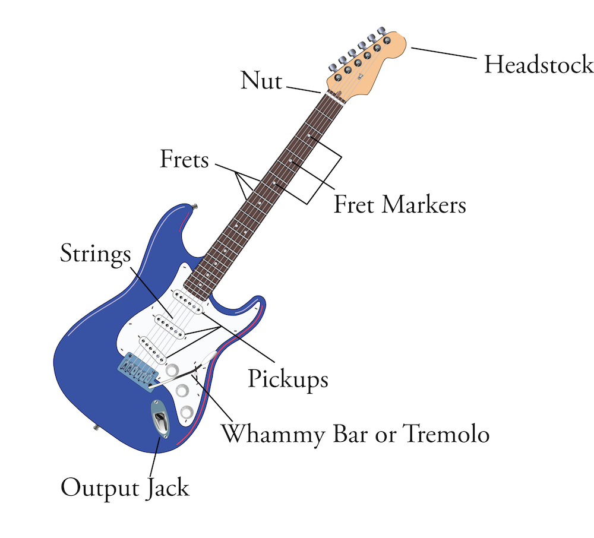
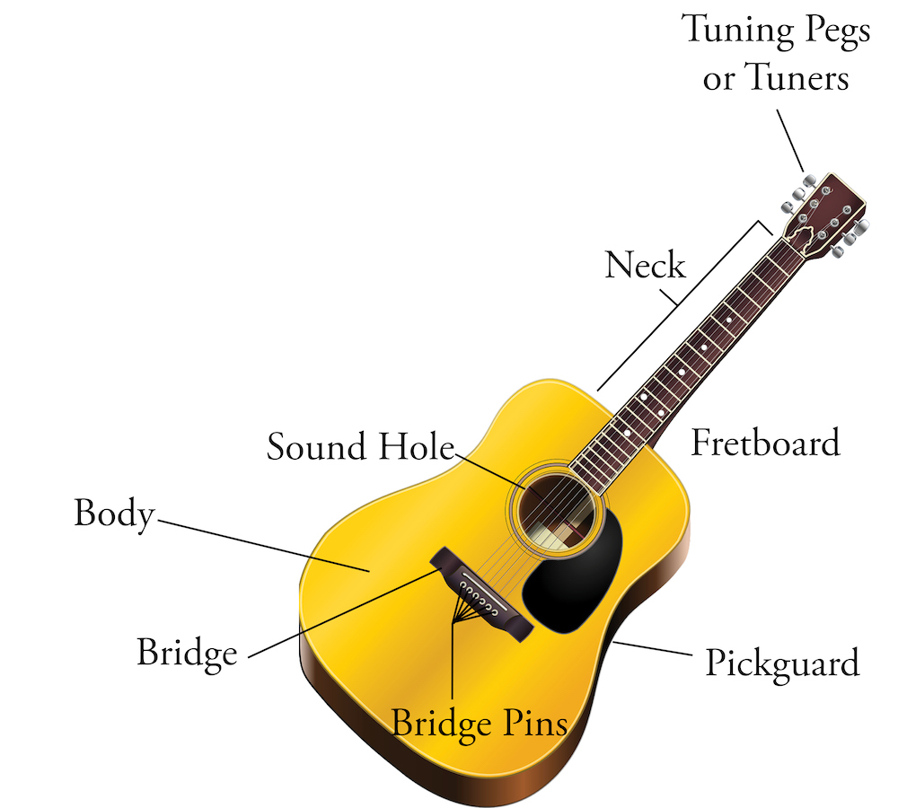

Guitar anatomy


- Body: The large part of the guitar where the strings connect to the bridge
- Bridge Pins: Pins on an acoustic guitar bridge to hold the strings in
- Bridge: Where the strings attach to the body
- Fret Markers: Markers on the fretboard for certain fret numbers
- Fretboard: Front of the neck
- Frets: Horizontal metal wires on the neck
- Headstock: The top of the guitar where the strings attach to the tuning pegs
- Neck: The thin area between the headstock and body
- Nut: Plastic or bone piece on the headstock where the strings pass over
- Output Jack: Where you plug a cable in from an electric guitar to an amp
- Pickguard: Plastic plate on the body of the guitar to protect against “pick rash”
- Pickups: Magnetic parts that are used to amplify the signal of an electric guitar
- Sound Hole: Hole in the center of an acoustic guitar body
- Strings: The metal or nylon parts that you play
- Tuning Pegs or Tuners: Gears at the top of the headstock used to tune the guitar
- Whammy Bar or Tremolo: Metal bar connected to the bridge on some electric guitars (like the Stratocaster) used to alter the pitch
Back: Introduction
Next: Guitar accessories